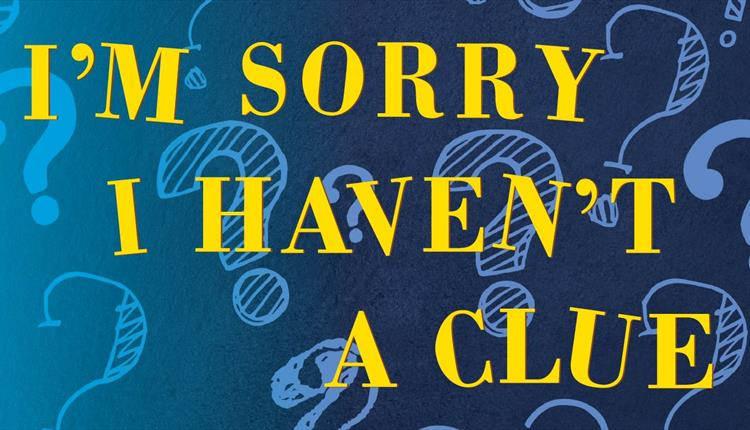

I'm Sorry I Haven't a Clue is a Radio 4 comedy panel game
Timeline
Games
More information
1972 first broadcast
1978 Mornington Crescent first played
1991 Jon Naismith becomes producer
1995 Jeremy Hardy's first appearance
2007 first stage tour
2009 Jack Dee becomes chairman
Some information about the timeline items goes here
Mornington Crescent
Some text about the game goes here
One Song to the Tune of Another
Some text about the game goes here
Uxbridge English Dictionary
Some text about the game goes here
In My Pants
Some text about the game goes here
Swanee Kazoo
Some text about the game goes here
Just a Minim
Some text about the game goes here
Sound Charades
Some text about the game goes here